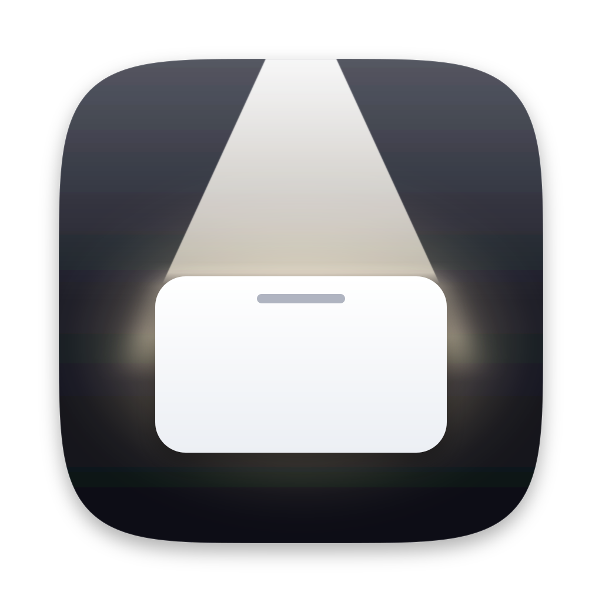
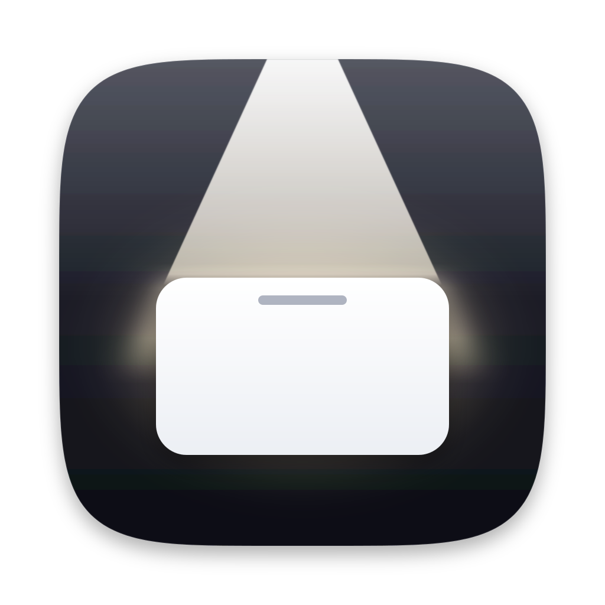
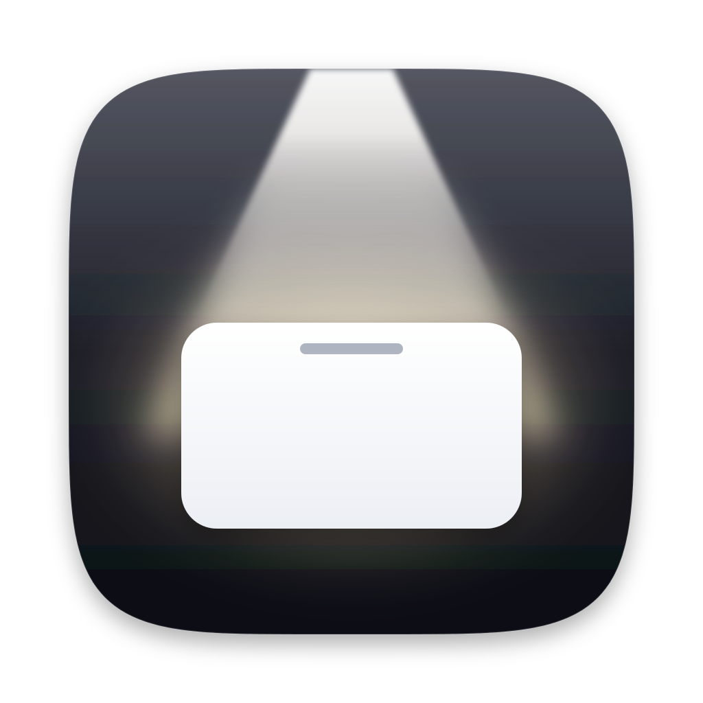

D, crisp beam

Round two D’s colours and glow, unchanged. The beam stays crisp down to the window and its end never shows.
64 · 32 · 16
From round two's D: the beam is crisp from the top down to the window, diffuses only once it's behind the window, and the haze fades away with no visible edge or beam end. 1 keeps round two D's colours and glow exactly; 2 has a little less glow. The last cards are for reference.

Round two D’s colours and glow, unchanged. The beam stays crisp down to the window and its end never shows.

The same, with a slightly smaller glow behind the window.

What you have now.

The version you liked, for comparison.